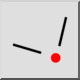
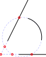

Przecięcie ręczne
Pasek narzędzi / ikona:


Menu: Przyciąganie > Przecięcie ręczne
Skrót: S, Y
Polecenia: snapintersectionmanual | sy
Pasek narzędzi / ikona:


Czasami tryb migawki przecięcia nie może być użyty do przyciągnięcia do punktu przecięcia, ponieważ punkt przecięcia znajduje się poza jednym lub dwoma elementami. To narzędzie snap umożliwia wyraźne określenie dwóch przecinających się elementów i przyciągnięcie do ich punktu przecięcia.
